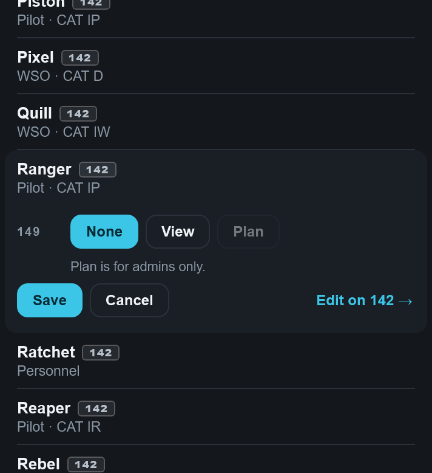

<title>E8 step by step</title>
<meta name="claude:viewport-fit-sides" content="cover">
<link rel="stylesheet" href="https://fonts.googleapis.com/css2?family=Inter:wght@400;600&family=Space+Grotesk:wght@600&display=swap">
<style>
/* Layout: one phone column; four numbered steps (a real sequence), each a short line of what happens and its picture; the choice at the foot. */
:root{
  --bg:#f4f6f8; --panel:#ffffff; --ink:#151b22; --muted:#55606e; --edge:#d6dde5; --accent:#0a6f8a; --rec:#0b6b45; --bad:#a3361f;
  --display:"Space Grotesk",system-ui,sans-serif; --body:"Inter",system-ui,sans-serif;
}
@media (prefers-color-scheme:dark){:root:not([data-theme="light"]){--bg:#0c0f13;--panel:#151a21;--ink:#e6ebf0;--muted:#97a3b0;--edge:#27303b;--accent:#38c6e8;--rec:#4fd39a;--bad:#f08a6e;color-scheme:dark}}
:root[data-theme="dark"]{--bg:#0c0f13;--panel:#151a21;--ink:#e6ebf0;--muted:#97a3b0;--edge:#27303b;--accent:#38c6e8;--rec:#4fd39a;--bad:#f08a6e;color-scheme:dark}
body{background:var(--bg);color:var(--ink);font-family:var(--body);line-height:1.5;margin:0;padding-left:max(16px,env(safe-area-inset-left,0px));padding-right:max(16px,env(safe-area-inset-right,0px));padding-block:20px 40px}
main{max-width:720px;margin:0 auto;display:grid;gap:26px}
h1,h2{font-family:var(--display);text-wrap:balance;margin:0}
h1{font-size:1.4rem;line-height:1.2}
h2{font-size:1.1rem;line-height:1.3;display:flex;gap:10px;align-items:baseline}
h2 .n{font-variant-numeric:tabular-nums;color:var(--muted);font-size:.95rem}
p{margin:0;max-width:65ch}
.lede{color:var(--muted)}
section{display:grid;gap:10px;background:var(--panel);border:1px solid var(--edge);border-radius:10px;padding:14px}
section.today h2{color:var(--bad)}
section.rec h2{color:var(--rec)}
.tag{font-family:var(--body);font-size:.75rem;font-weight:600;letter-spacing:.04em;text-transform:uppercase;color:var(--muted)}
figure{margin:0;display:grid;gap:6px;min-width:0}
figure img{width:100%;max-width:100%;border:1px solid var(--edge);border-radius:6px}
figure.tall img{max-height:520px;width:auto;justify-self:center}
figcaption{font-size:.92rem;color:var(--muted)}
.answer{display:grid;gap:8px}
.answer li{margin-bottom:4px}
b.rec{color:var(--rec)}
</style>

<main>
  <header style="display:grid;gap:6px">
    <h1>E8: a master admin looking at another squadron's people</h1>
    <p class="lede">Saber is a master admin, home 142. He has squadron 149 picked and opens Admin → Users. He wants to fix something on Ranger, who is a 142 man. Nothing here is built.</p>
  </header>

  <section class="today">
    <span class="tag">Today</span>
    <h2><span class="n">1</span>The "All squadrons" tick shows everyone, fully editable</h2>
    <p>With the tick on, every man's full row shows, whatever squadron is picked. Saber can archive Ranger (142) while the top bar says 149.</p>
    <p><b>The problem:</b> you ruled that a squadron's records are only changed on that squadron's own page. The tick breaks that rule for a master admin.</p>
    <figure><figcaption>Today: the tick on ("Filter · 1"), every row whole.</figcaption></figure>
  </section>

  <section class="rec">
    <span class="tag">Recommended</span>
    <h2><span class="n">2</span>No tick: the picked squadron open, the others folded</h2>
    <p>On 149's page, 149's people show in full. Each other squadron is one closed heading under them ("▸ 142 · 60 people"). Everyone is still on the page, so the tick is no longer needed.</p>
    <figure><figcaption>Saber on 149: 149's people, then 142 and 150 folded.</figcaption></figure>
  </section>

  <section class="rec">
    <span class="tag">Recommended</span>
    <h2><span class="n">3</span>Open a 142 man on 149's page: only his 149 access, and a way across</h2>
    <p>Saber opens the 142 heading and presses Ranger. On 149's page he can only set Ranger's access to 149 (None, View, Plan). Beside Save and Cancel is a link, <b>"Edit on 142 →"</b>.</p>
    <figure><figcaption>Desktop: Ranger opened on 149's page; "Edit on 142 →" at the right.</figcaption></figure>
    <figure class="tall"><figcaption>The same on a phone.</figcaption></figure>
  </section>

  <section class="rec">
    <span class="tag">Recommended</span>
    <h2><span class="n">4</span>One press: the app moves to 142, Ranger already open</h2>
    <p>The top bar changes to 142 (its number fades twice, as you ruled), Admin → Users is now 142's page, and Ranger's full row is open: sign-in, role, Suspend, Archive, Delete. Saber fixes it there, with the top bar telling the truth.</p>
    <figure><figcaption>After the press: on 142, Ranger's full row open.</figcaption></figure>
    <p>The link shows only to someone who is an admin of that squadron: a master admin, or Hunter for 142's men. Kestrel (149's admin) never sees it on a 142 man. If a window is open, the press is refused with the usual grey note, as any squadron switch is.</p>
  </section>

  <div class="answer">
    <h2>Your answer, one of</h2>
    <ol>
      <li><b class="rec">"E8 with the Edit link"</b>: steps 2 to 4 (recommended).</li>
      <li>"E8 as on the page": steps 2 and 3 without the link; to fix Ranger, Saber picks 142 from the squadron menu and finds Ranger again himself.</li>
      <li>"Keep the tick": as today, step 1.</li>
    </ol>
  </div>
</main>
